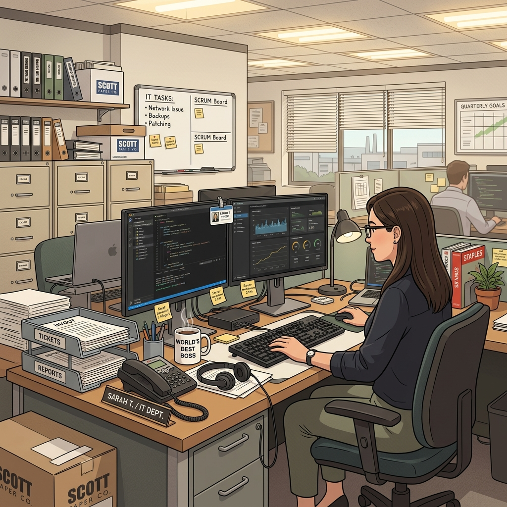

André Rogério
IT Analyst & Solutions Engineer
"I am fast. To give you a reference point, I’m somewhere between a snake and a mongoose… and a python script."

Image prompt generated for Dunder Mifflin IT aesthetic.
🏢 Official Employee Record
- Name: André Rogério (TheyDreez)
- Department: IT & Solutions Support
- Branch: Scranton (Remote)
- Current Role: IT Analyst
- Focus: Application Support / IT Solutions / Automation / Software Engineering
- Career Direction: IT Solutions → Cloud/AI → Solution Architecture
MEMO: Please stop asking if we have more toner. We don't. Submit a ticket.
🏆 The Dundies (Core Proficiencies)
- Best Ticket Troubleshooter: Diagnosing the undiagnosable since day one.
- Most Likely to Automate It: If I do it twice, I write a script for it.
- Best SQL Query at 5:47 PM: For when the report is due at 6:00 PM.
🗄️ Dunder Mifflin IT Stack
Paperwork (Productivity)
Microsoft 365, SharePoint, Teams
Operations (ITSM/ERP)
ServiceNow, SAP, Sienge ERP
Engineering (Code)
Python, TypeScript, React, Node.js, SQL
Infrastructure (Systems)
Active Directory, Entra ID, Intune, DNS, DHCP, TCP/IP
Cloud/AI
Google Cloud, Google Gemini
📂 Projects That Definitely Didn't Start as "Just a Quick Script"
Onboarding OS
An automated state-machine-driven pipeline for HR and IT onboarding. It ensures new hires actually get their laptops on day one.
Internal Ticketing System
An AI-augmented internal ticketing platform to track SLAs and deflect common requests before they reach the IT desk.
Memory Lens
A 3D spatial interface for clustering and searching massive document collections using AI embeddings. Finding the needle without burning down the barn.
(Camera zooms in through the blinds. Dwight is seen silently nodding at the security architecture diagram on the monitor.)
⚙️ What I Actually Build
This section is fully serious. No jokes. Just engineering.
When I am not solving day-to-day operational issues, I engineer resilient, secure, and scalable IT solutions. My focus is on eliminating manual toil through intelligent automation and robust application architecture.
Architecture & Backend
I design systems using feature-based architecture with clear separation of concerns (Controllers/Services/Middleware). My backend services are built primarily on Node.js/Express and Next.js API Routes, implementing strict state-machine workflows to prevent invalid data states. I leverage PostgreSQL and Supabase with versioned migrations and Row Level Security (RLS) to enforce tenant-aware data access.
Security & Integrations
Security is integrated at the code level, including JWT, expiring magic links, and HttpOnly cookies. I use AES-256-GCM encryption for sensitive records, bcrypt hashing, and Zod input sanitization. I build event-driven webhook architectures and integrate with third-party tools like ZapSign, DocuSeal, and various enterprise ITSM/ERP systems.
AI & Automation
I augment applications with AI (e.g., Google Gemini 2.5 Flash) not as a novelty, but as a deterministic layer to handle intent recognition and semantic search (via Vector Databases), deflecting tier-1 support tickets and intelligently routing complex issues.
Contact the IT Department
Have a project, opportunity, or just want to submit a ticket?
Find me on GitHub